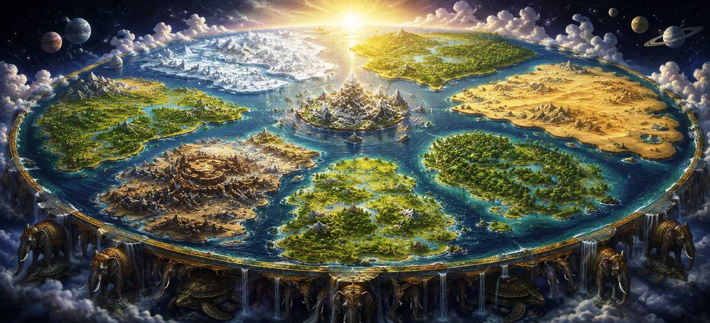

The Seven Continents of the Earth
Expanding the geographic lens far beyond the central realm of Jambudvipa, Chapter 18 of Uma Samhita plunges into Sapta Dvipa Mahatmya—the majestic exposition of the seven great continents of the earth and their surrounding cosmic oceans. In the profound architecture of Puranic cosmology, the earthly plane is not a singular isolated landmass, but a breathtaking, concentric system of vast island continents, each doubling in size and enclosed by wondrous oceans containing distinct divine liquids, precious minerals, and specialized ecosystems governed by cosmic law.
This chapter details the precise names, boundaries, governing rulers, and unique environmental characteristics of all seven dvipas: Jambudvipa, Plakshadvipa, Shalmalidvipa, Kushadvipa, Kraunchadvipa, Shakadvipa, and Pushkaradvipa. Through this grand description, the scripture reveals the infinite diversity and structural perfection of the physical universe created through the divine will of Lord Shiva.
Wonders of the Sapta Dvipas
Concentric Planetary Layout
Seven vast island continents expanding outward in perfect circular symmetry.
Surrounding Cosmic Oceans
Oceans composed of salt water, sugarcane juice, wine, ghee, curd, milk, and sweet water.
Divine Rulers and Dynasties
Sovereign kings and celestial guardians appointed to administer each dvipa.
Exotic Ecosystems & Flora
Legendary trees, sacred mountains, and unique life forms thriving in every realm.
Spiritual Populations
Devoted communities of purified beings engaged in continuous worship of the Supreme.
Macrocosmic Harmony
Demonstrating the absolute scale and meticulous design of Shiva's creation.
Core Topics in This Text
- 01 The Concentric Architecture and Scale of the Earth →
- 02 Jambudvipa, Plakshadvipa, and Shalmalidvipa →
- 03 Kushadvipa and Kraunchadvipa: Gems of the Middle Rings →
- 04 Shakadvipa and Pushkaradvipa: The Outer Continental Rings →
- 05 The Wondrous Oceans and Their Mysterious Substances →
- 06 Transitioning from the Seven Continents to the Worlds and Planets →
The Concentric Architecture and Scale of the Earth
This opening section lays out the grand structural framework of the planetary disk. Uma Samhita explains that the earth is formed of seven concentric island continents, each enclosed and separated from the next by a vast, circular ocean of immense proportions.
As the geography moves outward from the center, each successive continent doubles in width compared to the preceding one, creating a harmonious, geometric expansion that reflects the absolute precision of cosmic creation.
Jambudvipa, Plakshadvipa, and Shalmalidvipa
The scripture begins its detailed journey across the rings by revisiting the central *Jambudvipa*, followed by *Plakshadvipa*, named after the giant Plaksha (fig) tree that stands as its defining marker. Plakshadvipa is encircled by an ocean of sweet sugarcane juice and is ruled by Medhatithi, one of the sons of Priyavrata.
Beyond Plaksha lies *Shalmalidvipa*, distinguished by its monumental Shalmali (silk-cotton) tree and surrounded by an ocean of sparkling wine. It is inhabited by radiant beings who worship the divine powers upholding cosmic equilibrium.
Kushadvipa and Kraunchadvipa: Gems of the Middle Rings
Continuing outward, the text details *Kushadvipa*, named after the sacred Kusa grass that covers its landscape, bounded by an ocean of clarified butter (ghee). Following Kushadvipa is *Kraunchadvipa*, dominated by the towering Krauncha mountain range and encircled by an ocean of refreshing curd (yogurt).
These middle rings are resplendent with divine energy, housing accomplished populations who live long, peaceful lives dedicated to spiritual purity and righteousness under the grace of the Supreme Lord.
Shakadvipa and Pushkaradvipa: The Outer Continental Rings
The outer boundaries of the planetary system feature *Shakadvipa*, named after the magnificent Shaka (teak) tree and surrounded by an ocean of pure milk, and finally *Pushkaradvipa*, characterized by a massive lotus tree and enclosed by an immense ocean of sweet, crystal-clear water.
Pushkaradvipa marks the outermost ring of inhabited terrestrial geography, bounded by the Lokokalata mountains and the vast cosmic night that separates the earthly plane from the higher ethereal spheres.
The Wondrous Oceans and Their Mysterious Substances
A fascinating aspect of this geographic discourse is the composition of the oceans separating the seven dvipas. Unlike ordinary terrestrial seas, these cosmic waters consist of profound nourishing substances—salt water, sugarcane juice, wine, clarified butter, curd, milk, and fresh water.
Uma Samhita reveals that these substances hold deep cosmological and esoteric significance, representing the refined essences of elemental creation flowing through the arteries of the planetary body.
Transitioning from the Seven Continents to the Worlds and Planets
Having mapped the vast horizontal expanse of the seven great continents and their surrounding cosmic oceans, Uma Samhita prepares to shift its perspective upward, focusing next on the vertical hierarchy of the celestial worlds and planetary systems.
This sets the stage for the following chapter, where the sacred text guides the seeker through the higher realms of existence, revealing the multi-dimensional structure of the cosmos under the supreme sovereignty of Lord Shiva.
Spiritual Insight
Chapter 18 demonstrates that Lord Shiva's creation is infinitely vast, perfectly ordered, and filled with wondrous diversity across every concentric layer of existence. By contemplating the scale of the seven continents, our consciousness expands, moving beyond petty attachments to marvel at the grand cosmic design.
Frequently Asked Questions
① What are the seven great continents described in the Shiva Purana?
The seven great continents, or Sapta Dvipas, are Jambudvipa, Plakshadvipa, Shalmalidvipa, Kushadvipa, Kraunchadvipa, Shakadvipa, and Pushkaradvipa, each encircled by unique cosmic oceans.
② How are the continents arranged in Puranic geography?
They are structured in a concentric circular layout, where each successive continent is surrounded by a vast ocean composed of different substances such as salt water, sugarcane juice, wine, and clarified butter.
③ What is the purpose of detailing cosmic geography in Uma Samhita?
Detailing the planetary layout illustrates the magnificent order, infinite scale, and meticulous design of Lord Shiva's universal creation, inspiring awe and spiritual alignment in the seeker.